The AMICO Lab develops network science and connectomics methods to understand how brain connectivity shapes cognition, behaviour and disease.
…not a mainstream lab
Research
Brain connectomics models the brain as a network: structural connections from diffusion MRI, functional connections from fMRI and MEG. We build the mathematics to read these networks — and ask what they reveal about individuals.
What makes each connectome unique — identifying individuals from their functional connectivity across tasks, modalities and states of consciousness.
Beyond pairwise connections: topological and simplicial signatures of brain function, and what they add to task decoding and behaviour.
Applying network models to stroke, Alzheimer's, Parkinson's disease, anaesthesia and psychedelics.
…and these are just the main threads. Sleep, attention, brain communication, new mathematics for connectomes — the network keeps growing. See our publications for the full picture.
Explainer
No two brains are wired alike. Just as your fingertip identifies you, your functional connectome — the pattern of connections between your brain's regions — is unique enough to pick you out of a crowd. This idea, brain fingerprinting, runs through much of our work: from what makes a connectome identifiable, to how disease, anaesthesia and psychedelics reshape it. Enrico explains it all in four minutes.
Selected work
A few representative papers — click any figure to read the full article.
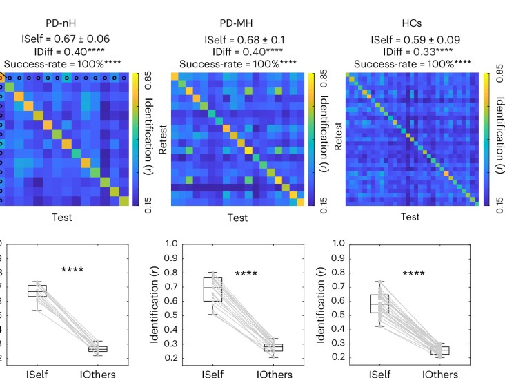
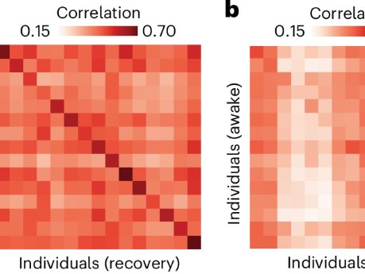
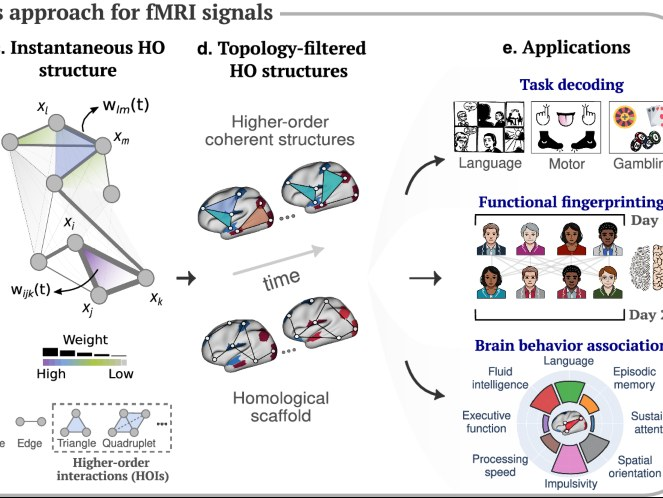
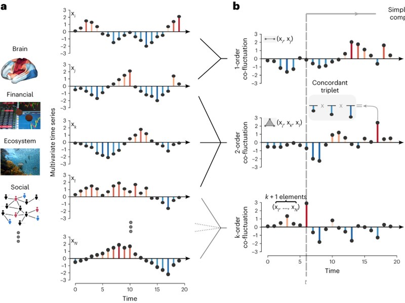
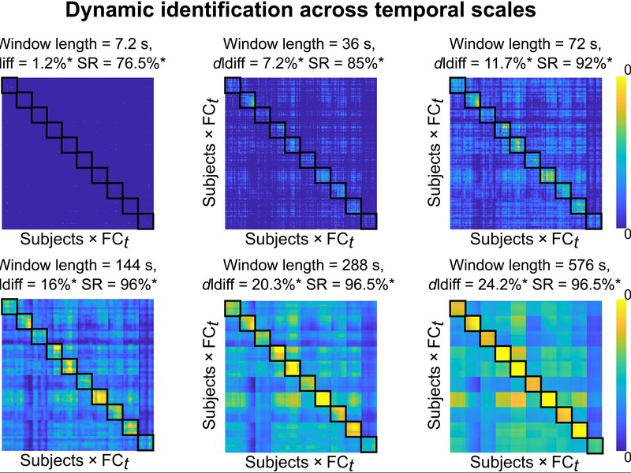
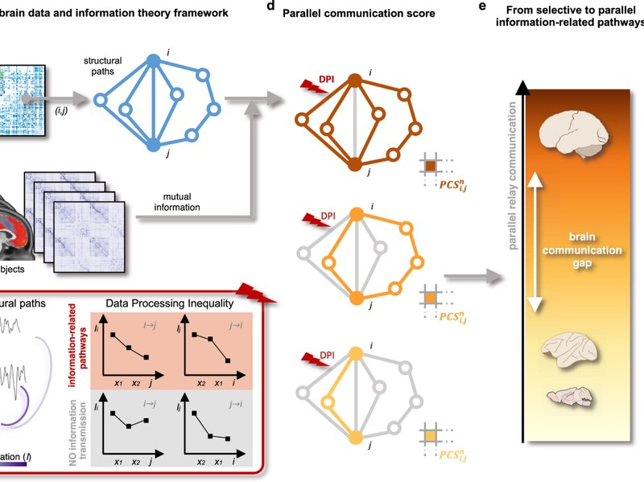
Appropriate null models for testing the effect of the head model on MEG functional connectivity fingerprinting. M. Schelfhout et al. — Brain Topography
The blueprint of human functional architecture shifts from cognition to anatomy during perturbations of consciousness. A. I. Luppi et al. — bioRxiv (preprint)
Patient-specific functional networks track early cognitive alterations and minor hallucinations in Parkinson's disease. S. Stampacchia et al. — Nature Mental Health
Brain connectivity fingerprinting as a predictive biomarker of art therapy outcomes in Parkinson's disease. A. Ielo et al. — Research Square (preprint)
Neural manifold connectomics reveals multiregime functional connectivity. P. Velidi et al. — bioRxiv (preprint)
News
Enrico to speak at AIMS 2026; Emily, Sandra and Kaiyi to present posters at OHBM 2026.
New in Nature Mental Health: patient-specific functional networks track early cognitive alterations in Parkinson's disease. Congrats to Sara Stampacchia!
Gwen Harrington passes her viva — "Dynamics, Networks, and Dynamics on Networks". Ad maiora, Gwen!
Our signal-processing perspective on brain fingerprinting is out in IEEE.
People
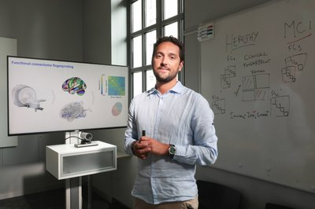
Enrico AmicoPrincipal Investigator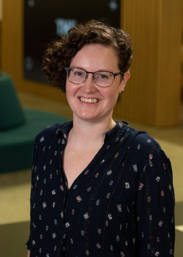
Rachael Stickland, PhDSenior Research Data Scientist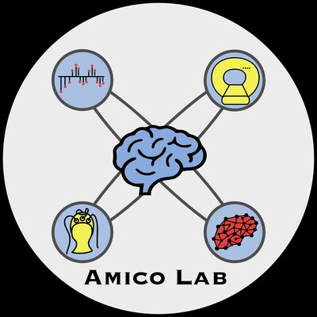
Gwen HarringtonPhD student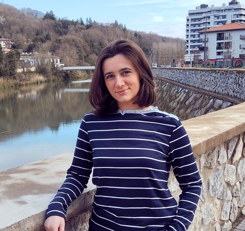
Sandra RodriguezPhD student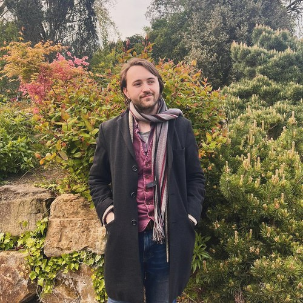
Peter KissackPhD student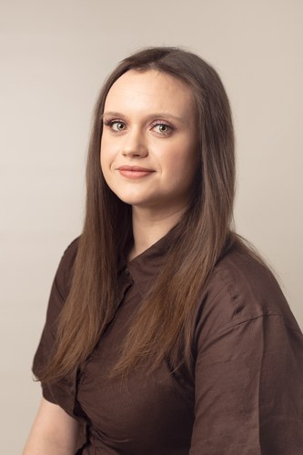
Emily WilsonPhD student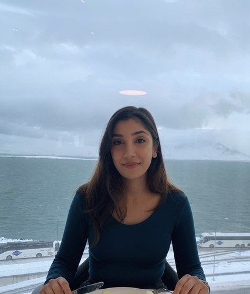
Ravneet VirdeeTrainee Clinical ScientistWhere we are
School of Mathematics & Centre for Human Brain Health, University of Birmingham, UK
PhD studentships are available for 2027, and we're always looking for enthusiastic students and postdocs interested in brain networks.